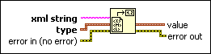

Unflatten From XML Function
Owning Palette: LabVIEW Schema VIs and Functions
Requires: Base Development System
Converts an XML string to a LabVIEW data type according to the LabVIEW XML schema.
If xml string contains the characters <, >, or &, the function converts those characters to <, >, or &, respectively. Use the Unescape XML VI to convert other characters, such as ".

 Add to the block diagram Add to the block diagram |
 Find on the palette Find on the palette |